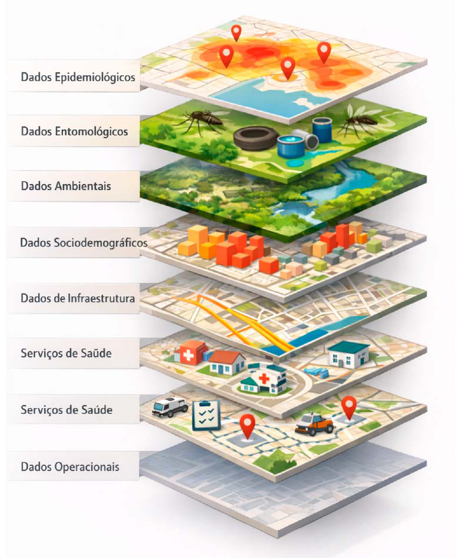
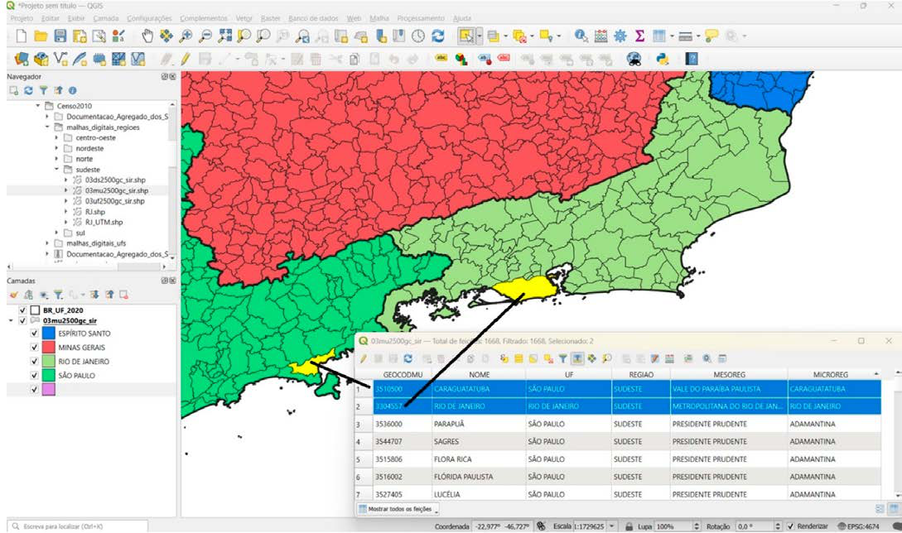

Módulo 3 | Aula 2
Noções básicas de Geoprocessamento e Sistema de Informações Geográficas
Dados espaciais
Ao longo desta disciplina tem-se destacado de que a Análise Espacial se dedica ao tratamento de dados espaciais. Mas afinal, qual a diferença de dado espacial para o dado comum?
Dados espaciais são aqueles que possuem uma localização geográfica definida, também denominados georreferenciados. Esses tipos de dados diferem dos demais, pois possuem uma posição espacial, isto é, podem ser referenciados ao local de ocorrência na superfície terrestre (Druck, 2004).
Essa posição geográfica pode ser identificada através:
- de um par de coordenadas;
- de seu endereço;
- relacionado a unidades espaciais – bairros, setores censitários, bacias hidrográficas.
Dentro de ambiente de SIG, trabalhamos com dados espaciais. Eles têm como característica básica o fato de serem compostos por duas componentes distintas (Carvalho et al., 2000):
Descreve a localização, as feições geográficas e os relacionamentos espaciais entre as feições, ou seja, a descrição gráfica do objeto como simbolizado num mapa.
Descreve os fatos e fenômenos, sociais e naturais, representados no mapa, representa as características, qualidades, ou relacionamentos de feições na representação cartográfica.
As componentes gráficas e não gráficas dos dados espaciais possuem características distintas, o que demanda técnicas específicas para otimizar seu gerenciamento. Na maioria dos programas de SIG, essas duas componentes são armazenadas em bases de dados separadas: os dados gráficos são manipulados diretamente pelo software de SIG, enquanto os dados não gráficos são gerenciados por Sistemas Gerenciadores de Bancos de Dados (SGBD) convencionais (Câmara et al., 2001).
Armazenamento dos dados
As componentes gráficas são estruturadas em forma de planos de informação (layers), organizados como um conjunto de camadas. Cada camada representa um tema e a seleção dos temas que comporão a base de dados integra o processo de modelagem do sistema e depende diretamente dos objetivos do projeto. Já as componentes não gráficas são armazenadas em tabelas organizadas em campos (colunas) e registros (linhas), e geralmente são gerenciadas por Sistemas Gerenciadores de Banco de Dados (SGBD) (Câmara, 2001).
Figura 5: Camadas de armazenamento da componente gráfica

Fonte: Elaborado pelas autoras
É possível realizar operações gráficas entre as camadas, e não apenas combiná-las visualmente.
Integração das componentes
A integração entre as duas componentes dos dados espaciais é uma característica básica dos SIG e se dá através de códigos comuns que identifiquem univocamente a entidade nas duas bases, chamados geocódigo.
Quando a análise é realizada em nível municipal — ou em unidades territoriais derivadas dos municípios — utiliza‑se, na maioria das vezes, o código de município do IBGE, que identifica cada município de forma única. Esse mesmo código também está presente nas bases gráficas disponibilizadas pelo DATASUS.
Figura 6: Esquema didático da representação de geocódigo - ligação entre a componente gráfica e não gráfica.

Fonte: Elaborado pelas autoras
Apesar dessa estrutura complexa, tais distinções permanecem completamente imperceptíveis para o usuário comum.